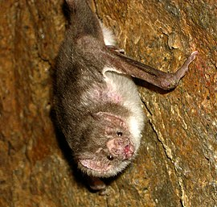
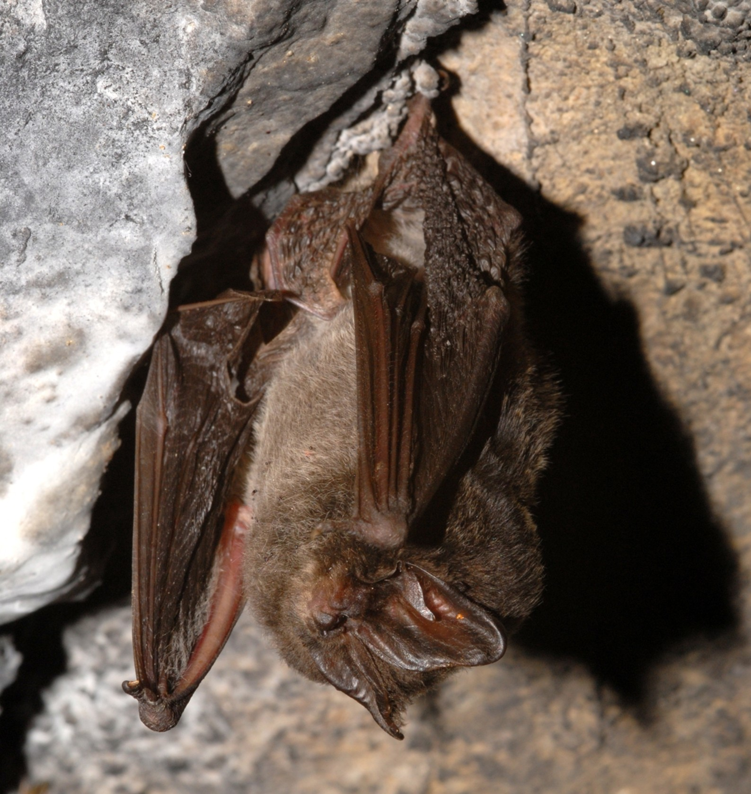

Významné druhy
Kaloň Malajský- jde o největšího aktivně létajícího savce na zemi. Kaloň Dlouhonosý
- jde o naopak jednoho z nejmenších Kaloňů, jí ovoce a má schopnost létat na místě jako kolibříci. Úpír-obecný
- jde o specialní druh netopýra který se převážně živí krví savců. Netopýr Černý
- jde o jednoho z druhů kteří se vyskytují v čr. Vrápenec
- je tvor podobný netopýrům.
 Netopýr velkouchý
Netopýr velkouchý- jde o netopýra s největšími uši, také žije v čr.
 Tadarida evropská
Tadarida evropská- jde o netopýra s z čeledě tadaridovitých.
 Létavec Stěhovavý
Létavec Stěhovavý- z čeledi létavcovití.